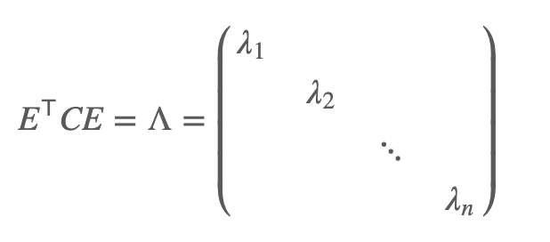

摘要
PCA算法本质实际上是n维数据向量空间的基变换，再将数据向量投影在变化之后的基之上，从而达到降维的目的，为了使n维数据向量在降维之后仍能尽可能保持原有的信息量，这就类似于有损压缩的概念（有损压缩是指使用压缩后的数据进行重构，重构后的数据与原来的数据有所不同，但不影响人对原始资料表达的信息造成误解）。所以基的选择自然显得十分重要。
信息熵
PCA降维的目的首先就是要尽可能保持其原有的信息量。那么信息的度量或者量化标准则成了一个关键问题。
所谓信息量是指从N个相等可能事件中选出一个事件所需要的信息度量或含量，也就是在辩识N个事件中特定的一个事件的过程中所需要提问”是或否”的最少次数. —《百度百科》
信息量与事件的不确定性有关
如果一个事件，不论在什么情况下，发生的结果都不会发生变化，那我们就认为它所包含的信息量为0。比如说一个程序，在代码不变的情况下，只要输入固定其结果必然一定，不论我们运行多少次都是同样的结果，我们从中所能获取的信息几乎为0，因为这件事对我们来说已经是非常确定了的。我们说科学就是探索未知，因为未知包含了无限的可能，包含了无限的信息。
香农给出了信息度量的定义：信息是用不确定性的量度定义的.一个消息的可能性愈小，其信息愈多；而消息的可能性愈大，则其信息愈少.事件出现的概率小，不确定性越多，信息量就大，反之则少。
换句话说，信息的度量是与概率相关的。
熵
依据Boltzmann’s H-theorem，香农把随机变量X的熵值 Η定义如下，其值域为{x1, …, x**n}：
其中，P为X的概率质量函数（probability mass function），E为期望函数，而I(X)是X的信息量。I(X)本身是个随机变数。
当取自有限的样本时，熵的公式可以表示为：
在这里b是对数所使用的底，通常是2,自然常数e，或是10。当b = 2，熵的单位是bit；当b = e，熵的单位是nat；而当b = 10,熵的单位是Hart。
p**i = 0时，对于一些i值，对应的被加数0 logb 0的值将会是0，这与极限一致。
还可以定义事件 X 与 Y 分别取 xi 和 yj 时的条件熵为
其中p(xi, yj)为 X = xi 且 Y = yj 时的概率。这个量应当理解为你知道Y的值前提下随机变量 X 的随机性的量。
熵与方差
方差
方差的定义
方差越大数据的波动也就越大，其不确定性自然越大,方差描述不确定度在某些情况下会失效，因为它要求数据均匀分布并且忽略极端事件的发生。熵本就是对信息的不确定度的度量，相比于方差必然更加精确。
基的选择
举个栗子：
假设我们的数据由五条记录组成，将它们表示成矩阵形式：
其中每一列为一条数据记录，而一行为一个字段。为了后续处理方便，我们首先将每个字段内所有值都减去字段均值，其结果是将每个字段都变为均值为0（这样做的道理和好处后面会看到）。
我们看上面的数据，第一个字段均值为2，第二个字段均值为3，所以变换后：

我们可以看下五条数据在平面直角坐标系内的样子：
如果我们必须使用一维来表示这些数据，又希望尽量保留原始的信息，你要如何选择？
直观的说这个问题实际上是要在二维平面中选择一个方向，将所有数据都投影到这个方向所在直线上，用投影值表示原始记录。这是一个实际的二维降到一维的问题。
所以数据样本投影到基后的投影值尽可能分散。也就是使得数据变化到基上的坐标后，方差最大。
优化目标
在多维的情况下，基的维数也是多维，因此投影方向也变成了多维问题，且数据样本的字段存在相关性显然，为了使得样本不同字段之间完全独立（相关性意味着两个字段不是完全独立，必然存在重复表示的信息。），选择的基两两之间必然是正交的。即：
将一组N维向量降为K维（K大于0，小于N），其目标是选择K个单位（模为1）正交基，使得原始数据变换到这组基上后，各字段两两间协方差为0，而字段的方差则尽可能大（在正交的约束下，取最大的K个方差）。
协方差矩阵
我们知道最终优化目标与字段内的方差和字段之间的协方差有关(字段之间独立)
对于矩阵x：
X乘以X的转置，并乘上系数1/m：
我们发现，对角线上的两个元素分别是两个字段的方差，而其它元素是a和b的协方差。要达到优化目前，等价于将协方差矩阵对角化：即除对角线外的其它元素化为0，并且在对角线上将元素按大小从上到下排列，这样我们就达到了优化目的。
设原始数据矩阵X对应的协方差矩阵为C，而P是一组基按行组成的矩阵，设Y=PX，则Y为X对P做基变换后的数据。设Y的协方差矩阵为D，我们推导一下D与C的关系：
变化矩阵P就是原始协方差矩阵对角化的P。
我们知道：协方差矩阵C是一个是对称矩阵，在线性代数上，实对称矩阵有一系列非常好的性质：
1）实对称矩阵不同特征值对应的特征向量必然正交。
2）设特征向量λ重数为r，则必然存在r个线性无关的特征向量对应于λ，因此可以将这r个特征向量单位正交化。
则对协方差矩阵C有如下结论：

对角元素为各特征向量对应的特征值，P对应与E的转置
P是协方差矩阵的特征向量单位化后按行排列出的矩阵，其中每一行都是C的一个特征向量。如果设P按照ΛΛ中特征值的从大到小，将特征向量从上到下排列，则用P的前K行组成的矩阵乘以原始数据矩阵X，就得到了我们需要的降维后的数据矩阵Y。
PCA算法
设有m条n维数据。
1）将原始数据按列组成n行m列矩阵X
2）将X的每一行（代表一个属性字段）进行零均值化，即减去这一行的均值
3）求出协方差矩阵C
4）求出协方差矩阵的特征值及对应的特征向量
5）将特征向量按对应特征值大小从上到下按行排列成矩阵，取前k行组成矩阵P
6）Y=PX即为降维到k维后的数据
结果示例
样本为符合[[-5，5]，[5，-5]]的协方差矩阵的数据
Python实现代码
1
2
3
4
5
6
7
8
9
10
11
12
13
14
15
16
17
18
19
20
21
22
23
24
25
26
27
28
29
30
31
32
33
34
35
36
37
38
39
40
41
42
43
44
45
46
47
48
49
50
51
52
53
54
55
56
57
58
59
60
61
62
63
64
65
66
67
68
69
70
71
72
73
74
75
76
77
78
79
80
81
82
83
84
85
86
87
88
89
90
91
92
93
94
95
| import numpy as np
import matplotlib.pyplot as plt
from sklearn.datasets import load_iris
from mpl_toolkits.mplot3d import Axes3D
class PCA(object):
def __init__(self, matrix):
self.sign = False
self.matrix = matrix
self.m, self.n = matrix.shape[:2]
def normalization(self):
matrix = self.matrix.T
for i in matrix:
i -= np.mean(i)
return matrix
def pca(self, dim):
matrix_T = self.normalization()
Cov = np.dot(matrix_T, self.matrix) / (self.m - 1)
x, y = np.linalg.eig(Cov)
eig_pairs = [[np.abs(x[i]), y[:, i]] for i in range(len(x))]
eig_pairs = sorted(eig_pairs, reverse=True)
Lambda = np.zeros_like(Cov)
for i in range(self.n):
Lambda[i][i] = eig_pairs[i][0]
self.sign = True
if dim > self.n:
print("illegal dimensions")
return False
P = np.array([eig_pairs[i][1] for i in range(dim)])
D = np.dot(np.dot(P, Cov).T, P)
D[D < 0.000001] = 0
new_data_reduced = np.dot(self.matrix, P.T)
print("\n", 20 * '-', "PCA降到{}维数据前10项".format(dim), 20 * '-', "\n", new_data_reduced[:10])
return new_data_reduced
def draw(ax, data, y):
X_lda = data
dim = X_lda.shape[1]
if X_lda.shape[1] == 1:
X_lda = np.array([[i[0], 1] for i in X_lda])
if dim == 3:
ax = plt.subplot(111, projection='3d')
label_dict = {0: 'Setosa', 1: 'Versicolor', 2: 'Virginica'}
for label, marker, color in zip(
range(0, 3), ('^', 's', 'o'), ('blue', 'red', 'green')):
plt.scatter(x=X_lda[:, 0][y == label],
y=X_lda[:, 1][y == label],
marker=marker,
color=color,
alpha=0.5,
label=label_dict[label]
)
leg = plt.legend(loc='upper right', fancybox=True)
leg.get_frame().set_alpha(0.5)
ax.set_title('PCA: Iris onto the first {} linear discriminants'.format(dim))
plt.tick_params(axis="both", which="both", bottom="off", top="off",
labelbottom="on", left="off", right="off", labelleft="on")
ax.spines["top"].set_visible(False)
ax.spines["right"].set_visible(False)
ax.spines["bottom"].set_visible(False)
ax.spines["left"].set_visible(False)
plt.grid()
plt.tight_layout()
if __name__ == "__main__":
data = load_iris()['data']
label = load_iris()['target']
label_dict = {0: 'Setosa', 1: 'Versicolor', 2: 'Virginica'}
pca = PCA(data)
pca_2d = pca.pca(2)
pca_3d = pca.pca(3)
fig = plt.figure(figsize=(12, 6))
ax1 = fig.add_subplot(121)
draw(ax1,pca_2d, label)
ax2 = fig.add_subplot(122, projection='3d')
ax2.scatter(*zip(*pca_3d),c=label)
ax2.set_title("PCA: Iris onto the first 3 linear discriminants",size=20)
plt.show()
|